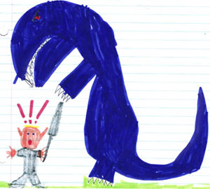
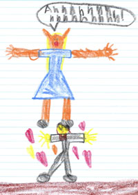

|
|
|
|

Tavelorn critically fails his Climbing roll while scaling the Deathstone |

Rae gets abducted by a cousin of the Creature from the Black Lagoon |
 Karandis attacked by Bwun, a skull-chomping lizard monster |

Tavelorn takes another header, this time at the Whirlpool of Death |

Rae is standing just a little too close to a dwarf whose belt of grenades gets blown up |

Karandis is pushed out of a high window by a spiteful elfmaid, and cracks his skull |

Tavelorn catches fire after opening a magically-trapped book |

Rae's worst fear: getting grabbed by sneaky mages using Walk Through Earth |

Karandis' arch-enemy, Zanyssa Feyna, blasts him with a lightning bolt from her flying carriage |

Tavelorn gets electrocuted by the dreaded "Zappy Eels" of Stone's Deep |

Rae wearing lingerie in a coffin ... this is what happens when the GM borrows a scenario from a book by Richard Laymon! |

Another picture of the same Bwun incident |

Rae levitating to get away from King Croc |

They were warned not to say the name of the ancient dragon lord "Shizrak" three times ... they were warned ... |
|

Rae's grandfather, the assassin, is caught and executed in Hachland |

Karandis takes on the crew of the Geroshan Orc pirate ship, the Devil Eye |
|
|
 Rae levitates again, but this time a lusty dwarf looks up her dress |

While getting a massage, Karandis is stabbed in the back by the elf-hating human towel boy |
|

Rae swims in a sacred spring of Saint Rubia, the dwarven goddess of art and beauty, and grows long curling sideburns |